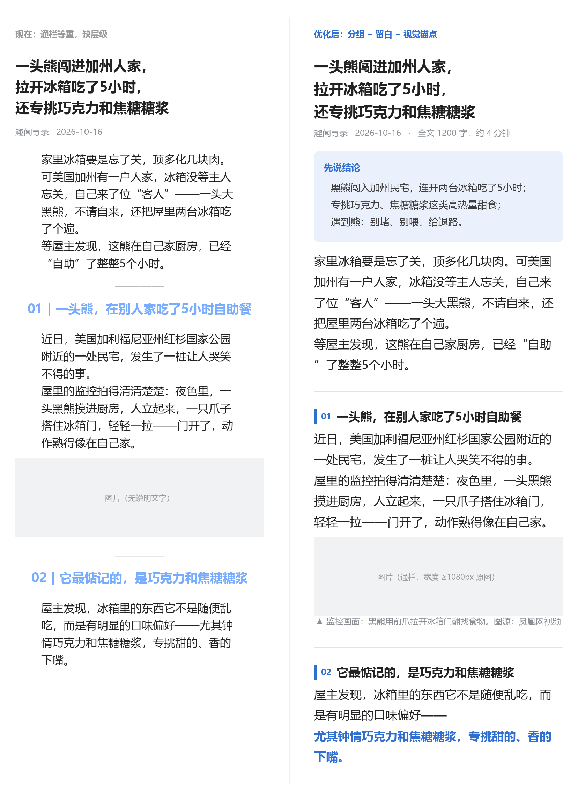

样式不统一
今天 16px、明天 17px，小标题一会儿加粗一会儿变色。模板把字号、行高、间距、字距固定下来。
公众号后台只能一段段调样式，长文排版有三个麻烦：
今天 16px、明天 17px，小标题一会儿加粗一会儿变色。模板把字号、行高、间距、字距固定下来。
图片和图注散架、来源丢失。程序用 figure + figcaption 把图注焊在图上。
Word、网页、AI 复制来的内容格式全乱。支持 .docx、.html（含公众号文章页）直接导入。
ul/li，不是 ①②③ 文本
需要 Python 3.8+，不装任何第三方包（GUI 预览 JPG 可选 Pillow）。
git clone git@github.com:SinWrong/wechat-md.git
cd wechat-md
# 文案 → 模板 + 可粘贴 HTML
python tools/wechat_md.py examples/bear.md -o 输出.md --html 输出.html
# 直接读网页 / Word
python tools/wechat_md.py 文章.html -o 输出.md
python tools/wechat_md.py 稿子.docx -o 输出.md --summary
# 桌面编辑器（Windows 可双击 wechat_md_gui.bat）
python tools/wechat_md_gui.py examples/bear.mdWindows 下也可以把文件拖到 wechat_md.bat 上。
*_模板.md继续改文案用。带模板说明、排版参数表、发布前自检清单。
*_可粘贴.html浏览器打开 → 全选复制 → 公众号后台正文粘贴。图片在后台重新上传。
--preview 生成，375px 宽，发布前先看效果。